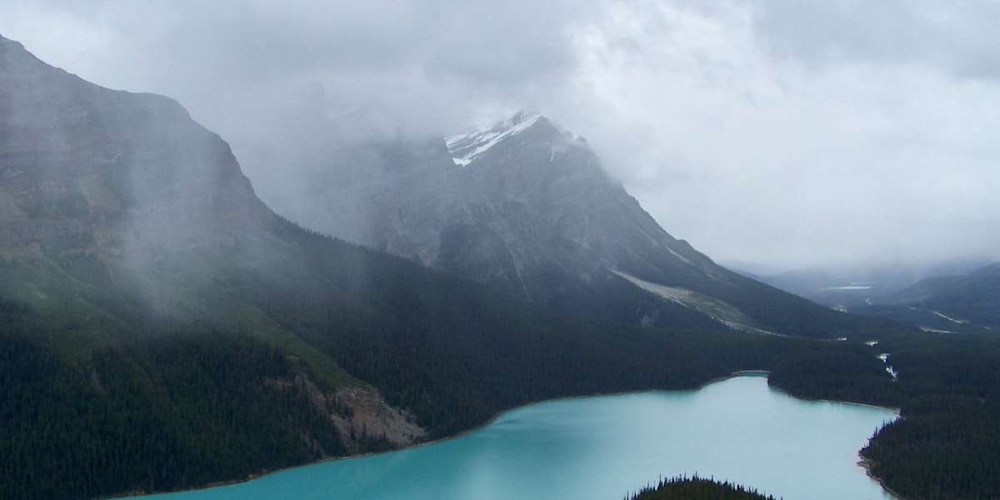

קנדה היא המדינה השנייה בגודלה בעולם מבחינת שטח כולל, המשתרעת על פני כ-9.98 מיליון קילומטרים רבועים.

קנדה היא המדינה השנייה בגודלה בעולם מבחינת שטח כולל, המשתרעת על פני כ-9.98 מיליון קילומטרים רבועים. כדי לתת פרספקטיבה — היא כל כך גדולה שהיא משתרעת על פני שישה אזורי זמן! ממזרח למערב, קנדה נמתחת מהאוקיינוס האטלנטי ועד האוקיינוס השקט, ומהגבול הדרומי עם ארצות הברית ועד האוקיינוס הארקטי בצפון.
המדינה מחולקת לעשר פרובינציות ושלושה טריטוריות. הפרובינציות — ממערב למזרח — הן בריטיש קולומביה, אלברטה, ססקצ'ואן, מניטובה, אונטריו, קוויבק, ניו ברנסוויק, נובה סקוטיה, אי הנסיך אדוארד וניופאונדלנד ולברדור. שלושת הטריטוריות בצפון הם יוקון, הטריטוריות הצפון-מערביות ונונאווט. לכל אזור נוף, תרבות ואופי ייחודיים משלו.
הנופים של קנדה מגוונים להפליא. במערב תמצאו את הרי הרוקי המתנשאים, עם פסגות שעולות מעל 3,000 מטרים. חוף בריטיש קולומביה דרמטי ומחוספס, עם פיורדים עמוקים ויערות גשם שופעים. בנסיעה מזרחה דרך אלברטה וססקצ'ואן, השטח משתטח למישורי הערבות הנרחבים — חלק מהאדמות החקלאיות הפוריות ביותר בעולם. אונטריו וקוויבק הם ביתם של האגמות הגדולים ונהר סנט לורנס האדיר, שיחד מהווים אחת ממערכות המים המתוקים הגדולות בעולם. הפרובינציות המזרחיות, הידועות בשם המריטיימס, מתאפיינות בקווי החוף, קהילות הדייגים ורוחות האוקיינוס שלהן. ובצפון הרחוק תמצאו טונדרה, קרקע קפואה לצמיתות וכמה מאזורי הפרא המרוחקים ביותר על פני כדור הארץ.
לקנדה גם מספר עצום של אגמים — כל כך רבים שלפי ההערכות המדינה מכילה כ-20% ממאגרי המים המתוקים העיליים בעולם. עם למעלה מ-2 מיליון אגמים, לעולם לא תהיו רחוקים מדי ממים, בכל מקום שתגורו בקנדה.
קבעו שיחה ונתכנן יחד את הצעדים הבאים שלכם.